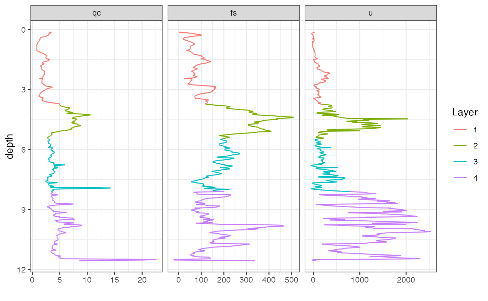
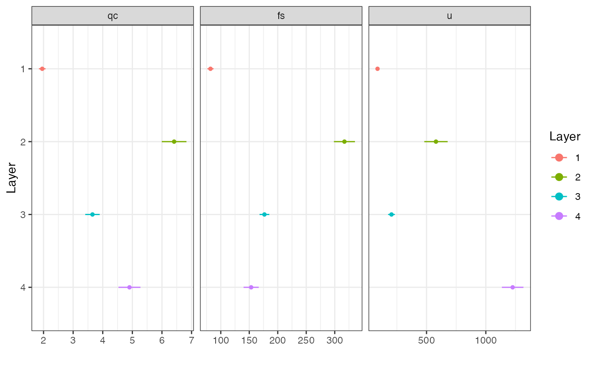
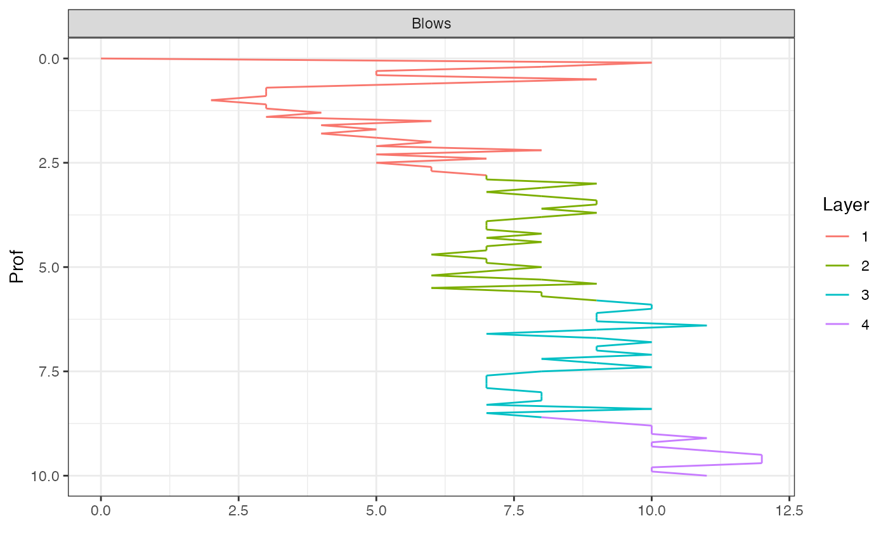
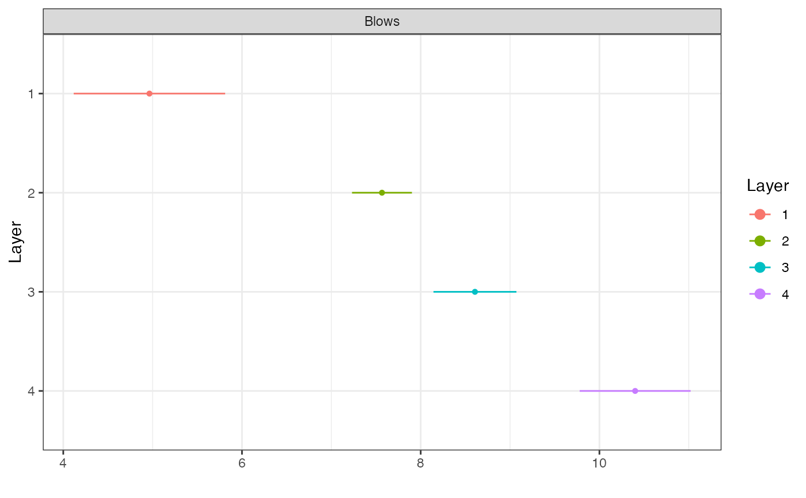

Performs multiple change-point analysis in univariate or multivariate data, to find layer boundaries in a perforation log.
Arguments
- data
A data frame containing the depth/distance in the first column, and the variables of interest in the rest of the columns, for a CPTu test: point resistance (qc), sleeve friction (fs), and pore-water pressure (u)
- R
The number of random permutations
- alpha
A parameter between 0 (exclusive) and 2 (inclusive). lower values make allow for more variation in the search for changepoints
- sig.level
Significance level to determine significance of the changepoints
- min.perc
Minimum percentage of data points per layer (between changepoints)
- conf.level
Confidence level to use for plot and summary statistics (Default is 0.95)
Value
ggplot and plotly objects showing the layer distinction, statistical summary of the layers, and a summary table
Details
The example data given is intended to show the structure needed for input data. The user should follow this structure, which in general corresponds with a data frame with a sequence in the first column and the observed/measured values in the rest of the columns
References
Nicholas A. James, David S. Matteson (2014). ecp: An R Package for Nonparametric Multiple Change Point Analysis of Multivariate Data, Journal of Statistical Software, 62(7), 1-25.
Examples
mcp(CPTu_data, R = 199, alpha = 2, sig.level = .01, min.perc = 15) # multivariate example
#> $LayersGG

#>
#> $LayersLY
#>
#> $StatsGG

#>
#> $StatsLY
#>
#> $Summary
#> Layer Interval Property Obs Mean SD Min Max CI.lwr
#> 1 1 [0.12,3.74] qc 181 1.96 0.765 0.75 5.01 1.84
#> 2 1 [0.12,3.74] fs 181 81.90 36.900 0.53 166.00 76.50
#> 3 1 [0.12,3.74] u 181 86.90 94.200 -37.30 358.00 73.00
#> 4 2 (3.74,5.46] qc 86 6.41 1.940 2.69 10.60 5.99
#> 5 2 (3.74,5.46] fs 86 317.00 86.100 121.00 509.00 299.00
#> 6 2 (3.74,5.46] u 86 580.00 460.000 53.90 2040.00 481.00
#> 7 3 (5.46,8.1] qc 132 3.65 1.420 2.38 14.20 3.41
#> 8 3 (5.46,8.1] fs 132 177.00 49.800 56.00 271.00 168.00
#> 9 3 (5.46,8.1] u 132 205.00 164.000 -54.80 690.00 176.00
#> 10 4 (8.1,11.6] qc 174 4.90 2.480 2.68 22.60 4.53
#> 11 4 (8.1,11.6] fs 174 153.00 89.000 -22.20 467.00 140.00
#> 12 4 (8.1,11.6] u 174 1230.00 608.000 -31.80 2530.00 1140.00
#> CI.upr MoE
#> 1 2.07 0.112
#> 2 87.40 5.410
#> 3 101.00 13.800
#> 4 6.83 0.416
#> 5 335.00 18.500
#> 6 678.00 98.600
#> 7 3.90 0.245
#> 8 185.00 8.570
#> 9 233.00 28.200
#> 10 5.27 0.371
#> 11 167.00 13.300
#> 12 1320.00 91.000
#>
#> $ES
#> [1] 0.405
#>
mcp(DPM_data, R = 199, alpha = 2, sig.level = .01, min.perc = 15) # univariate example
#> $LayersGG

#>
#> $LayersLY
#>
#> $StatsGG

#>
#> $StatsLY
#>
#> $Summary
#> Layer Interval Property Obs Mean SD Min Max CI.lwr CI.upr MoE
#> 1 1 [0,2.8] Blows 28 4.96 2.190 0 10 4.12 5.81 0.849
#> 2 2 (2.8,5.8] Blows 30 7.57 0.898 6 9 7.23 7.90 0.335
#> 3 3 (5.8,8.6] Blows 28 8.61 1.200 7 11 8.14 9.07 0.465
#> 4 4 (8.6,10] Blows 15 10.40 1.120 8 12 9.78 11.00 0.620
#>
#> $ES
#> [1] 0.62
#>